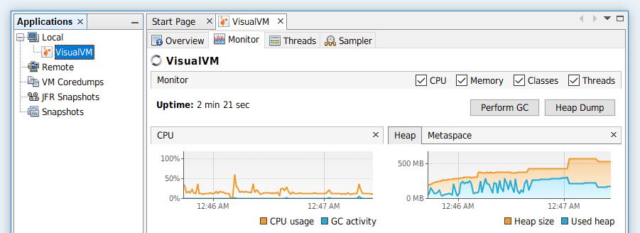

All-in-One Java Troubleshooting Tool
Designed for both development and production time use.
|
|

|
|

News:February 15, 2026: VisualVM 2.2.1 Released
VisualVM 2.2.1 adds support for JDK 25 and delivers a bunch of bugfixes. See the Release Notes for all changes. The tool can be downloaded from the Download page, sources are available in April 22, 2025: VisualVM 2.2 Released
VisualVM 2.2 adds support for JDK 24, metrics for virtual threads and Jolokia connections (new plugin). See the Release Notes for all changes. The tool can be downloaded from the Download page, sources are available in September 17, 2024: VisualVM 2.1.10 Released
VisualVM 2.1.10 adds support for JDK 23 and delivers several heapviewer improvements and bugfixes. The VisualVM for VS Code extension is now considered stable! See the Release Notes for all changes. The tool can be downloaded from the Download page, sources are available in July 16, 2024: VisualVM 2.1.9 Released
VisualVM 2.1.9 is a maintenance release mainly updating the VS Code extension. See the Release Notes for all changes. The tool can be downloaded from the Download page, sources are available in April 24, 2024: VisualVM for VS Code Integration Extension Released The VisualVM for VS Code extension has been released. It integrates the VisualVM tool with Visual Studio Code. More information is available at http://visualvm.github.io/idesupport.html. |